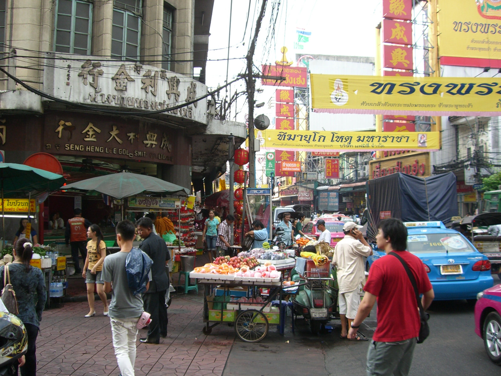

Хочу прогуляться в субботу (или в воскресенье) по Чайнатауну ака Сампенг
Опубликовано: 25 дек. 2009
Опубликовано: 26 дек. 2009
Прогулка состоялась - хотя было пройдено только пол-маршрута. Грант, спасибо за компанию ;-)
Немного фото-впечатлений.
Чтобы это значило?

Как и ожидалось, скорость перемещения на автомобиле раза этак в два меньше скорости пешехода.
Чайнатаунская торговля

Motorbike taxi drivers играют в шашки
Как известно, в Таиланде сифуда нет
Предновогодний шоппинг
Конфуцианский храм или китайцы всегда готовы к празднованию года тигра
Стоит Ват Траймит в лучах заката
А возле него готовится какой то экшн
romx: Опубликовано: 27 дек. 2009
Тоже прошел только половину :)
Экшн был мощный, с мультимедиа и прочими проекциями на стены храма и "водяной занавес".
Какое-то торжественное служение. Привезли очень много монахов, с тысячу наверное, частью зашедших внутрь, частью сидевших снаружи. Его Величество в записи прочел какую-то речь. Внутри (показывали на большом экране снаружи, и транслировали звук) дядьки официального вида в пинжаках сидели со стариками-монахами, которые читали сутты, потом передали им подношения. Примерно полтора часа шло. Улица снаружи была вся уставлена стульями и сидяшим народом.
По ходу чтения снаружи на храм проецировали разные картины. В общем перформанс с сурраундом, светом, дымами. Несмотря на необычность - понравилось.